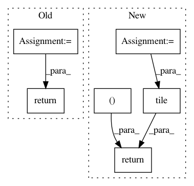

d1ac7b831ad36cd0e4bdd7980819f83208345148,gpflow/expectations.py,,_expectation,#Any#Any#Any#Any#Any#,560
Before Change
message="Product currently only supports diagonal Xcov.", name="assert_Xcov_diag"),
]):
_expectation_fn = lambda k: _expectation(p, k, feat, k, feat)
return functools.reduce(tf.multiply, [_expectation_fn(k) for k in kern.kern_list])
@dispatch(DiagonalGaussian, object, (InducingFeature, type(None)), object, (InducingFeature, type(None)))
def _expectation(p, obj1, obj2, obj3, obj4):
After Change
:return: NxDxQ
with params_as_tensors_for(mean1), params_as_tensors_for(mean2):
N = tf.shape(p.mu)[0]
e_xxt = p.cov + (p.mu[:, :, None] * p.mu[:, None, :]) // NxDxD
e_xxt_A = tf.matmul(e_xxt, tf.tile(mean2.A[None, ...], (N, 1, 1))) // NxDxQ
e_x_bt = p.mu[:, :, None] * mean2.b[None, None, :] // NxDxQ
return e_xxt_A + e_x_bt
@dispatch(Gaussian, mean_functions.Linear, type(None), mean_functions.Identity, type(None))
def _expectation(p, mean1, none1, mean2, none2):
In pattern: SUPERPATTERN
Frequency: 3
Non-data size: 6
Instances
Project Name: GPflow/GPflow
Commit Name: d1ac7b831ad36cd0e4bdd7980819f83208345148
Time: 2018-02-07
Author: alex.ialongo@gmail.com
File Name: gpflow/expectations.py
Class Name:
Method Name: _expectation
Project Name: GPflow/GPflow
Commit Name: bd1e9c04b48dd5ccca9619d5eaa2595a358bdb08
Time: 2020-01-31
Author: st--@users.noreply.github.com
File Name: gpflow/kernels/misc.py
Class Name: Coregion
Method Name: K_diag
Project Name: keras-team/keras
Commit Name: 08014eea360fd8d66b7baab19cdb9335f52c167b
Time: 2016-08-24
Author: francois.chollet@gmail.com
File Name: keras/backend/tensorflow_backend.py
Class Name:
Method Name: repeat